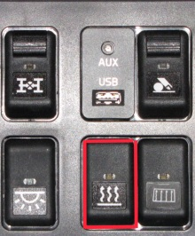
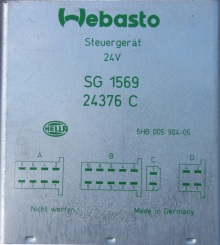
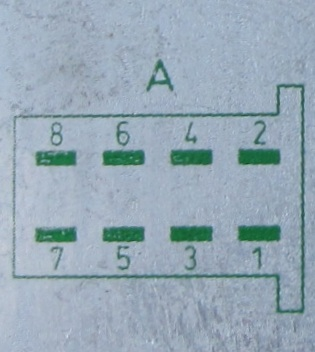
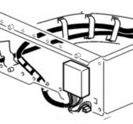
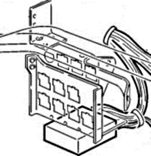

Fault code reading:
Thermo 90S and 90ST, the fault code is indicated by the LED on the heater power switch.

Thermo 90: Connect a test lamp between contact block A pin 6 and ground on the control unit.
 
The location of the control unit differs between FH and FM models.
Location on FM, Short cab: The bulkhead behind the passenger seat.
Location on FM, Long cab: Storage box on passenger side.

Location on FH: Below the relay unit on the right side.

Always check that the control unit has a satisfactory grounding connection A:3 (X12:9 on Thermo 90S). And that the fuses have not blown, and that the overheating protection has not triggered.
Fault codes:
Turn on the ignition and activate the heater.
After a couple of seconds, the lamp/LED will flash. Count the long flashes.
If you are troubleshooting a previous operational problem that is no longer active, the fault code is shown in the subsequent phase. The flashes consist of 5 short phases and 1-11 longer phases (you must count the long flashes).
1 Long flash: non-start.
2 Long flashes: flame extinguishes during operation.
3 Long flashes: undervoltage.
4 Long flashes: flame sensor indicates constant flame.
5 Long flashes: flame sensor fault.
6 Long flashes: temperature sensor fault.
7 Long flashes: fuel pump fault.
8 Long flashes: combustion air fan fault.
9 Long flashes: glow plug fault.
10 Long flashes: overheating.
11 Long flashes: Water pump fault.
5 x Rapid flashes: too many non-starts.